성명 : 송대표 (71세)
이력 : 한강경제연구소 소장을 지낸 경제 전문가 출신의 정치계 원로이자 와크다특별시 중앙구 6선 국회의원
피해자와의 관계 : 피해자가 속한 저런당의 당대표
알리바이 확인 ›
성명 : 박보좌 (38세)
이력 : '101분 토론', '그것이 알고 싶소' 등 시사 프로그램만 15년째 해온 방송작가 출신의 보좌관
피해자와의 관계 : 이런당 대선캠프 공보 보좌관으로 활동 중인 정치적 견제 대상
알리바이 확인 ›
성명 : 장후보 (54세)
이력 : 대대로 정치를 하는 가문에서 태어난 엘리트이자 와크다특별시 시장을 역임한 3선 국회의원
피해자와의 관계 : 27대 대선에 이런당 후보로 출마하여 피해자와 치열한 경합을 벌이고 있는 정치적 라이벌
알리바이 확인 ›
성명 : 정사모 (54세)
이력 : 대한민국 10대 그룹 중 하나인 '세련 그룹'의 회장
피해자와의 관계 : 피해자의 아내이며 현재 선거 유세를 돕고 있는 조력자
알리바이 확인 ›
성명 : 양알바 (27세)
이력 : 소시민대학교 정치외교학과 4학년 휴학 중인 대한민국 대표 흙수저
피해자와의 관계 : 한 달 전부터 저런당 선거 캠프에서 아르바이트 중인 선거 유세 도우미
알리바이 확인 ›